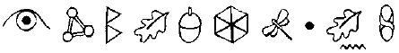
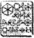

SPİRO İĞNESİ, CHİCAGO, ILLINOIS, ABD
JON Spiro, Heathrow’dan Chicago O’Hare Uluslararası havaalanına kadar bir Concorde’la geldi. Uzun bir limuzin onu Chicago’nun merkezinde seksek altı kat göğe yükselen, çelik rengi ve cam bir bina olan Spiro Needle’a götürdü. Spiro Endüstrileri ellinci katla seksen beş arasınaydı. Seksen altıncı kat Spiro’nun özel dairesiydi; girişi sadece özel asansör ya da helikopter pistindendi.
Jon Spiro bütün yolculuk boyunca, evrak çantasında duran küçük küpün heyecanından uyuyamamıştı. Spiro bu zararsız görünüşlü kutunun nelere kadir olduğunu anlattığında teknik ekibinin başı da o kadar heyecanlandı ve hemen C Küpün gizlerini çözme daldı. Altı saat sonra bir toplantı için hızla konferans odasına daldı.
“İşe yaramaz,” dedi bilim adamı, ismi Doktor Pearson’du.
Spiro martini bardağındaki zeytini döndürdü.
“Ben öyle olduğunu sanmıyorum, Pearson,” dedi. “Hatta, o küçük zımbırtının bırak işe yaramazlığını muhteşem bir şey olduğunu biliyorum. Bence belki de sen bu denklemde işe yaramıyorsun.”
Spiro’nun ruh hali çok kötüydü. Pervasız Arno biraz önce arayıp Fowl’un hayatta olduğunu söylemişti. Spiro’nun neşesi kaçınca, insanlar eğer şanslılarsa yeryüzünden kaybolmakla ünlüydüler.
Pearson, konferans odasındaki üçüncü kişinin bakışlarından kafasını kestiğini hissedebiliyordu. Bu size kızmasını istemeyeceğiniz bir kadındı: Pearson,' eğer Jon Spiro onu pencereden attırmaya karar verirse, bu özel kişi onun kendi kendine atladığına yazılı ve yeminli ifade vermekte hiçbir sorun yaşamazdı.
Pearson kelimelerini dikkatle seçti. “Bu alet-”
“C Küp. Onun ismi bu. Bunu sana söyledim, bu yüzden bu ismi kullan.”
“Bu C Küpün hiç şüphesiz çok büyük bir potansiyeli var. Ama kodlanmış.”
Spiro zeytini bilim adamının kafasına attı. Bir Nobel Ödülü kazanan kişi için bu aşağılayıcı bir deneyimdi.
“O zaman kodu kır. Size niçin para ödüyorum ki?” Pearson kalp atışlarının hızlandığını hissedebiliyordu. “O kadar da kolay değil. Bu kod. Kınlamaz.”
“Şunu açığa çıkaralım,” dedi Spiro, sığır kanı rengi deri koltuğuna geri yaslanarak. “Sizin bölümünüze yıllık iki yüz milyon veriyorum ve bir veledin yaptığı rezil bir kodu kıramıyorsunuz.”
Pearson gövdesinin yere düşerken çıkaracağı çarpma sesi düşünmemeye çalışıyordu. Bir sonraki cümle ya onu kurtarabilirdi ya da sonunu getirebilirdi.
“Bu Küp sesle çalışıyor ve Artemis Fowl’un ses örneğine göre kodlanmış. O kodu hiç kimse kıramaz. Olası değil.”
Spiro karşılık vermedi; bu devam et sinyaliydi.
“Böyle bir şeyi duydum. Biz bilim adamları bu konuda teoriler üretiyoruz. Ona Sonsuzluk Kodu denir. Bu kodun milyonlarca olası permütasyonu var ve sadece o kadar da değil, bilinmeyen bir dil üzerine kurulmuş. Göründüğü kadarıyla bu çocuk sadece onun bildiği bir dil yaratmış. Onun İngilizce’yle nasıl uyuştuğunu bile bilmiyoruz. Hatta böyle bir kodun varolmamış olması gerekiyor. Eğer Fowl öldüyse, o zaman bunu söylediğim için üzgünüm, Bay Spiro ama C Küp de onunla beraber öldü.”
Jon Spiro ağzının köşesine bir puro sokuşturdu. Ama yakmadı. Doktorları bunu yasaklamışlardı. Nazikçe.
“Eğer Fowl yaşıyorsa?”
Pearson ona atıldığında can simidini tanırdı.
“Eğer Fowl yaşıyorsa, onu kırmak Sonsuzluk Kodunu kırmaktan çok daha kolay olacaktır.”
“Tamam, Doktor,” dedi Spiro. “Gidebilirsin. Bundan sonra gelenleri duymak istemezsin.”
Pearson notlarını topladı ve hızla kapıdan çıktı. Masadaki kadının yüzüne bakmamaya çalıştı. Eğer sonradan gelenleri duymazsa vicdanının temiz olduğu konusunda kendini kandırabilirdi. Ve konferans masasındaki kadını gerçekten görmediyse, o zaman şüphelilerin arasından seçemezdi.
“Göründüğü kadarıyla bir sorunumuz var,” dedi siyah elbiseli kadına Spiro.
Kadın başıyla onayladı. Bütün giysileri siyahtı. Siyah bir takım elbise, siyah bluz, siyah sivri topuklu ayakkabılar. Kolundaki Rado saat bile simsiyahtı.
“Evet. Ama benim tarzımda bir sorun.”
Antonelli ailesinin şehir merkezi bölümünü yöneten Carla Frazetti, Spatz Antonelli’nin manevi kızıydı. Carla, büyük ihtimalle Chicago'daki en güçlü iki adam olan Spiro ve Antonelli arasındaki bağı sağlıyordu. Spiro kariyerinin başlangıcında Çeteyle bağlantılı işlerinin açılacağını öğrenmişti.
Carla manikürlü tırnaklarını kontrol etti.
“Bana öyle geliyor ki tek bir fırsatın var: Fowl denen veledi yakalamak ve bu kodu ondan zorla almak.”
Spiro bunu düşünerek yanmamış purosunu içine çekti. “O kadar da ortada olmaz. Veledin sıkı bir örgütü var. Fowl Malikânesi bir kale gibidir.”
Carla gülümsedi. “Bu bahsettiğimiz on üç yaşında bir velet, değil mi?”
“Altı ay sonra on dört olacak,” dedi savunurcasına Spiro. “Her neyse, ortada karmaşıklıklar var.”
“Ne gibi?”
“Arno yaralandı. Bir şekilde Fowl dişlerini kırmış.” “Ah,” dedi Carla, irkilerek.
“Bırak bir operasyon yönetmeyi meltemde bile duramaz.”
“Bu kötü.”
“Doğrusu, velet en iyi adamlarımın hepsini işe yaramaz hale soktu. Onlar da diş bakımındalar. Bu bana bir servete patlayacak. Bu konuda benim dışarıdan yardıma ihtiyacım var.” .
“İşi bize mi devretmek istiyorsun?”
“Kesinlikle. Ama doğru adamlar olması lazım. İrlanda eski tarz bir yer. Uyanık adamlar bir kilometreden göze batarlar. Benim aralarına karışıp veledi buraya onlarla gelmeye ikna edebilecek türden adamlara ihtiyacım var. Kolay para.”
„ Carla gözlerini kırpıştırdı. “Seni anlıyorum, Bay Spiro.” “O zaman böyle adamların var? Kendilerine dikkat çekmeden bu işle ilgilenebilecek adamlar?”
“Anladığım kadarıyla senin bir metal adam ve bir maymuna ihtiyacın var.”
Çete argosunu bilen Spiro başıyla onayladı. Metal adam silah taşırdı ve maymun girmesi zor yerlere girerdi. “Defterimizde öyle iki kişi var. İrlanda’da ters bir dikkat çekmeyeceklerini garanti ederim. Ama bu iş ucuz olmayacak.”
“İyiler mi?” diye sordu Spiro.
Carla gülümsedi. Ön dişlerinden birinde minnacık bir yakut vardı.
“Ah, iyiler,” diye karşılık verdi. “Bu adamlar en iyileridir.”
METAL ADAM
MÜREKKEP LEKESİ DÖVMECİ DÜKKÂNI, CHİCAGO ŞEHİR MERKEZİ
Loafers* McGuire bir dövme yaptırıyordu. Maça ası gibi bir kurukafa. Bu kendi dizaynıydı ve bundan gurur duyuyordu. Hatta o kadar gurur duyuyordu ki dövmenin boynuna yapılmasını istemişti. Dövmeci Mürekkepli Burton, aynasızlar bir şüphelinin kimliğini tespit etmek istediklerinde boyun dövmelerinin etiketlerden daha iyi olduğunu ileri sürerek onu ikna etmeyi başarmıştı. Loafers yumuşadı. “Tamam,” dedi. “Pazıma yap o zaman.”
*Loafers: Lofer, mokasen. Bir tür altı düz, bağcıksız ayakkabı.
Loafers her bitirdiği işten sonra bir dövme yaptırırdı. Vücudunda hâlâ asıl rengini koruyan pek fazla yer kalmamıştı. İşte bu Loafers McGuire’ın işinde ne kadar iyi olduğunu gösteriyordu.
Loafers'ın esas ismi Aloysius’du ve İrlanda’nın Kilkenny şehrinden olduğunu iddia ederdi. Kendine Loafers gibi bir isim bulmuştu çünkü onun Aloysius’dan çok daha fazla Çeteye uygun olacağını düşünmüştü. Bütün hayatı boyunca Loafers aynı filmlerdeki gibi bir çete üyesi olmak istemişti. Bir Kelt Mafyası başlatma çabası boşa çıkınca Loafers Chicago’ya gelmişti.
Chicago Çetesi onu kollarını açarak karşılamıştı- Aslında infazcılarından biri onu ayı kapanma almış ti- Loafers onu ve altı arkadaşını Merhamet Ana Hastanesine yollamıştı. Bir buçuk metrelik bir adam için hiç de kötü değildi bu. Uçaktan indikten sekiz saat sonra Loafers ücret bordrosuna yazılmıştı.
Ve işte buradaydı, iki yıl ve birçok işten sonra örgütün en iyi metal adamı olmuştu bile. Uzmanlığı silahlı soygun ve alacak tahsiliydi. Bir buçuk metrelikler için pek sıradan bir iş tarzı değildi bu. Ama Loafers şifadan bir bir buçukluk da değildi.
Loafers dövmecinin oynar koltuğunda geri yaslandı. “Ayakkabılarımı beğendin mi, Mürekkepli?” Mürekkepli gözlerindeki terleri sildi. Loafers’la uğraşırken dikkatli olman gerekirdi. En masum soru bile bir tuzak olabilirdi. Tek bir yanlış cevapla kendini Aziz Peter’in önünde günahlarının nedenlerini anlatırken bulabilirdin. “Evet. Güzeller. Bunlara ne deniyor?”
“Loafers!” diye patladı ufak tefek gangster. “Loafers, salak. Onlar benim markam.”
“Ah, evet, loafers. Unuttum. Bir markan olması sıkı bir şey.”
Loafers kolundaki gelişmeyi kontrol etti.
“İğneye geçmeye hazır değil misin?”
“Oluyorum,” diye karşılık verdi Mürekkepli. “Ana noktaları çizmeyi bitirdim. Yeni bir iğne takmam gerekiyor."
“Canım acımayacak, değil mi?”
Tabii ki acıyacak salak, diye düşünüyordu Mürekkepli. Koluna iğne sokacağım.
Ama yüksek sesle dedi ki: “Fazla değil. Kolunu uyuşturuculu pamukla sileceğim.”
“Acımasa iyi olur,” diye onu uyardı Loafers. “Yoksa hemen arkasından senin de canın acır.”
Loafers McGuire hariç hiç kimse Mürekkepli’yi tehdit etmemişti. Çetenin bütün dövme işlerini Mürekkepli yapardı. Eyaletteki en iyisi oydu.
Carla Frazetti kapıyı açıp içeri girdi. Siyahlar içindeki şıklığı bu kirli yere hiç uymuyor gibiydi.
“Selam, çocuklar,” dedi.
“Selam, Bayan Carla,” dedi Mürekkepli, iyice kızararak. Mürekkep Lekesine gelen bir bayanla pek karşılaşmazdınız.
Loafers ayağa fırladı. O bile patronun manevi kızma saygı duyardı.
“Bayan Frazetti. Bana mesaj yollayabilirdiniz. Bu çöplüğe gelmenize gerek yoktu.”
“Bunun için zaman yok. Bu acil. Hemen gidiyorsun.” “Gidiyor muyum? Nereye?”
“İrlanda’ya. Amcam Pat hasta.”
Loafers kaşlarını çattı.
“Amcam Pat mi? Benim Pat Amcam yok ki?”
Carla sivri topuklu ayakkabılarından birinin ucunu yere vurdu.
“O hasta, Loafers. Gerçekten hasta, eğer ne dediğimi anladıysam ”
Loafers sonun da uyandı.
“Ah, anladım. Yani onu ziyaret etmem gerekiyor.”
“İşte bu kadar. İşte o kadar hasta.”
Loafers kolundaki mürekkebi silmek için bir paçavra kullandı.
“Tamam, ben hazırım. Doğru havaalanına mı gidiyoruz?”
Carla ufak tefek gangsterin koluna girdi.
“Yakında, Loafers. Ama .önce gidip kardeşini almamız lazım.”
“Benim kardeşim yok,” diye itiraz etti Loafers.
“Tabii ki var. Pat Amcanın evinin anahtarı onda. O her zamanki küçük maymun.”
“Ah,” dedi Loafers. “O kardeşim.”
Loafers ve Carla Doğu Yakasından limoya bindiler. Loafers Amerika binalarının aşın büyüklüğü karşısında hâlâ huşu duyuyordu. Kilkenny’de beş katın üzerinde hiçbir şey yoktu ve Loafers bütün hayatı boyunca bir varoş bungalovundan yaşamıştı. Ama bunu Çete arkadaşlarına asla itiraf etmemişti. Onlara uymak için kendisinin, gençliği boyunca sürekli hapse girip çıkan bir yetim olduğunu uydurmuştu.
“Maymun kim?” diye sordu.
Carla Frazetti simsiyah saçlarını pudra kutusunun aynasında düzeltiyordu. Saçları kısa ve parlak siyahtı.
“Yeni biri. Mo Digence. Senin gibi İrlandalı. Bu işleri çok uygun bir hale sokuyor. Ne vize, ne evraklar, ne de ayrıntılı bir paravan hikâye gerekiyor. Sadece iki kısa boylu adam memleketten tatile gelmişler.”
Loafers’ın saçları diken diken oldu.
“İki kısa adamla ne demek istiyorsun?”
Carla pudra kutusunu kapattı.
“Sen kiminle kokuşuyorsun, McGuire? Benimle öyle konuşamazsın. O tonda.”
Loafers’ın rengi attı, bütün hayatı bir anda gözünün önünden geçti.
“Özür dilerim, Bayan Frazetti. Bu o kısa kelimesinden oldu. Bütün hayatım boyunca onu duydum.”
“İnsanların sana ne demesini istiyorsun? *Lofty mi? Sen kısasın, Loafers. Buna alış. Sana avantaj sağlayan şey bu. Manevi babam her zaman, bir şey ispat etmek isteyen kısa boylu bir adamdan daha tehlikeli bir şey yoktu der. İşte bu yüzden bir işin var.”
*Lofty: Yüce, uzun.
“Sanırım öyle.”
Carla onun omzuna vurdu.
“Neşelen, Loafers. Bu adamla kıyaslandığında sen sıradan bir devsin.”
Loafers bariz bir şekilde toparlandı. “Gerçekten mi? Mo Digence’in boyu ne kadar?”
“Kısa,” dedi Carla. “Tam kaç santimetre bilmiyorum ama o kadar kısa ki bezini değiştirip, çocuk arabasına koyabilirim.”
Loafers sırıttı. Bu işten hoşlanacaktı.
MAYMUN
Mo Digence’in daha iyi zamanlan olmuştu. Dört aydan daha az bir zaman önce bankada bir milyon dolardan fazla bir parayla Los Angeles’da bir çatı katında yaşıyordu. Ama artık birikimi Suçlu Mallan Bürosu tarafından dondurulmuştu ve komisyon Chicago Çetesi yüzdeyle çalışıyordu. Spatz Antonelli komisyonlarıyla bilinen biri değildi. Tabii ki Mo her zaman Chicago’dan ayrılabilir ve Los Angeles’a dönebilirdi ama orada suç mahalline dönmesini bekleyen, ellerinde onun ismi olan bir polis gücü vardı. Hatta Mo Digence için ne yerin üstünde, ne de yerin altında güvenli bir yer yoktu çünkü Mo Digence aslında Mulch Diggums’du: kleptoman cüce ve LEP’in peşinde olduğu bir kaçak.
Mulch, madenlerdeki hayatın ona uygun olmadığına karar veren bir tünel cücesiydi. Madencilik yeteneklerini başka bir yolda kullanıyordu: yani Çamur Adamları kıymetli eşyalarının ağırlığından kurtarıyor ve onları peri karaborsasında satıyordu. Tabii ki başka birisinin yerleşim yerine izin almadan girmek büyünü kaybetmek demekti ama bu Mulch'un umurunda değildi. Cücelerin zaten pek fazla güçleri yoktu ve büyü yapmak her zaman midesini bulandırırdı.
Cüceler birçok fiziki özelliklerinden dolayı1 ideal ev soyguncuları olurlardı. Çenelerini çıkarabilir,' bir anda kilolarca toprak yiyebilirlerdi. Faydalı minerallerden temizlenen toprak diğer uçtan dışarı atılırdı. Gözeneklerinden içebilmek gibi bir özellikleri de vardı; bu mağara çökmelerinde çok işe yarayan bir nitelikti. Aynı zamanda bu gözenekler canlı vantuzlara dönüştürebilirdi, bu da bütün ev hırsızlarının cephaneliğine yakışan bir aletti. En son olarak, cüce kılı kedigillerin bıyıkları gibi canlı bir antendi; böcek kapanı yerine geçmekten tünel duvarlarına sonar dalgaları yollamaya kadar her şeyi yapabilirdi.
Mulch peri yeraltı dünyasında parlayan bir yıldızdı; Binbaşı Root onun dosyasını eline alana kadar. O zamandan beri, üç yüz yılı hapse girip çıkarak geçirmişti. Şu anda Holly Short’un fidyesinden birkaç altın külçeyi çalmaktan aranıyordu. Yeraltında, kendi türdaşları arasında bile onun için güvenli bir yer yoktu. Bu yüzden Mulch kendini insan gibi göstermek ve Chicago Çetesinden verilen her işi almak zorunda kalmıştı.
Bir insan kılığına bürünmenin riskleri vardı. Tabii ki boyu aşağı doğru bakan herkesin dikkatini çekerdi. Ama Mulch çabucak Çamur Adamların neredeyse herkese güvenmemek için bir bahane bulabildiklerini keşfetmişti. Boy, kilo, deri rengi, din. Bir şekilde farklı olmak neredeyse daha güvenliydi.
Güneş en büyük sorundu. Cüceler aşırı fotosentez yapıp üç dakikadan kısa bir süre içinde yanarlardı. Neyse ki Mulch’un işi genelde geceydi ama gündüz saatlerinde çalışmaya zorlandığında açıktaki derisinin her santimetrekaresine dayanıklı güneş kremi sürerdi.
Mulch yirminci yüzyıl başlarının kırmızı tuğlalarından yapılmış bir bodrum dairesi kiralamıştı. Biraz onarım istiyordu ama cüceye çok iyi uymuştu. Yatak odasındaki döşemeyi söküp çürümüş temeller üzerine iki ton yüzey toprağı ve gübre döktürmüştü. Küf ve rutubet çoktan duvarları kaplamıştı, bu yüzden başka bir şeyi değiştirmeye gerek yoktu. Birkaç saat içinde odadaki böcek yaşamı başlamıştı. Mulch deliğinde sırt üstü uzanıp yatacak ve sakalındaki hamamböceklerini yakalayacaktı. Evim güzel evim. Dairesi sadece bir tüneli hatırlatmakla kalmıyordu, eğer LEP ortaya çıkarsa, göz açıp kapayana kadar yerin elli metre altında olacaktı.
Önümüzdeki günlerde, Mulch kapının çalındığını duyduğunda hemen o yolu seçmediği için pişman olacaktı.
Kapı çalındı. Mulch tünel yatağından sürünerek çıktı ve kamerayı kontrol eti. Carla Frazetti pirinç kapı tokmağında saçlarına bakıyordu.
Patronun manevi kızı? Kendisi gelmiş. Bunun büyük bir iş olması gerekiyordu. Belki de yüzdesi onu başka bir eyalete yollamaya yetecek hale gelmişti. Yaklaşık üç aydır Chicago’daydı ve LEP’in izini bulması sadece bir an meselesiydi. Ama asla ABD’den ayrılmayacaktı. Eğer yer yüzünde yaşıyorsanız, kablolu Televizyonu ve çalacak tonla zengin insan olan bir yerde olmalıydınız.
Mulch dahili telefonun düğmesine bastı.
“Bir dikkat, Bayan Frazetti, giyiniyorum.”
“Çabuk ol, Mo,” dedi Carla, sesi ucuz hoparlörlerden çıtırdıyordu. “Burada yaşlanıyorum.”
Mulch eski patates çuvallarından yaptığı bir cüppe giydi. Elbisenin kumaşını Haven Hapishanesi pijamalarına benzetmesi tuhaf bir şekilde rahatlatıcıydı. Arada kalan böcekleri çıkartmak için sakalını hızla taradı ve kapıyı açmaya gitti.
Yanından geçen Carla Frazetti salona girip tek koltuğuna oturdu. Kapının eşiğinde, kameranın açısından gizlenmiş, başka bir adam daha vardı. Mulch bunu aklına not aldı. CCTV lenslerini yeniden ayarla. Bir peri, kalkanlanmış olmasa bile altından gizlice girebilirdi.
Adam Mulch’a tehlikeli bir şekilde yan yan baktı. Bu, tipik Çete tavrıydı. Bu insanların adam öldüren gangsterler olmaları kaba olmalarını da gerektirmiyordu'.
“Başka koltuğun yok mu?” diye sordu ufak tefek insan, Bayan Frazett’yi salona doğru takip ederek.
Mulch kapıyı kapattı. “Bana sık misafir gelmez. Doğrusu siz ilksiniz. Genelde Bruno bana sinyal atar ve dükkâna damlarım.”
Peynir Bruno, Çete’nin yerel denetçisiydi. İşi bir yerel yeni araba galerisinden yönetirdi. Söylentiye göre on beş senedir iş saatleri içinde masasının arkasından kalkmamıştı.
“Burada oldukça iyi görünüyor,” dedi Loafers, alay edercesine. “Küf ve ağaçbiti. Beğendim.”
Mulch rutubetin yeşil izi boyunca parmağını gezdirdi. “Ben taşındığımda bu küf duvar kağıdının arkasındaydı. İnsanların neyle kaplandıkları inanılmaz.”
Carla Frazetti çantasından bir şişe White Petals parfümü çıkardı ve etrafındaki havaya sıktı.
“Tamam, bu kadar sohbet yeter. Senin için özel bir işim var, Mo.”
Mulch sakin görünmek için kendini zorladı. Bu onun için büyük şanstı. Belki güzel, rutubetli bir çukur bulur ve bir süre için orada gözden uzak, sakince takılırdı.
“Bu, eğer doğru yaparsan iyi para ödenecek türden bir iş mi?”
“Hayır,” diye karşılık verdi Carla. “Bu eğer yanlış yaparsan karşılığını canın çok yanarak ödeyeceğin türden bir iş.”
Mulch iç çekti. Artık hiç kimse nazikçe konuşmuyor muydu?
“Niçin ben?” diye sordu.
Carla Frazetti gülümsedi, yakutu loş ışıkta parıldadı.
“Bu soruya cevap vereceğim, Mo. Tuttuğum adamlara açıklama yapmaya alışık olmasam da. Özellikle de senin gibi maymunlara.”
Mulch yutkundu. Bazen bu insanların ne kadar acımasız olduklarını unutuyordu. Ama asla uzun süre değil.
“Bu görev için seçildin, Mo çünkü o Van Gogh için yaptığın çok iyi işten dolayı.”
Mulch alçak gönüllü bir şekilde gülümsedi. Müzenin alarmı çocuk işiydi. Köpek bile yoktu.
“Hem de İrlanda pasaportu olmandan dolayı.
New York’da saklanan bir gnome kaçak çalınmış bir LEP kopyasından ona İrlanda evrakları yapmıştı. İrlandalılar her zaman için Mulch’un en sevdiği insanlar olmuşlardı, bu yüzden onlardan biri olmaya karar vermişti. Bunun başını belaya sokacağını bilmeliydi.
“Bu iş İrlanda’da ki bu genelde sorun olabilir. Ama ikiniz için parası ödenmiş tatil gibi olacak bu.”
Mulch başıyla Loafers’ı gösterdi. “Bu salak kim?” Loafers’ın ters bakan gözleri kısıldı. Eğer Bayan Frazetti tek kelime etse, bu adamın onu orada öldüreceğini biliyordu.
“Bu salak Loafers McGuire, ortağın. O bir metal adam. Sen kapıları açıyorsun. Loafers hedefi buraya getiriyor.”
Hedefi buraya getirmek. Mulch bu terimin ne manaya geldiğini anladı ve bu işe karışmak istemedi. Soygunculuk bir şeydi ama adam kaçırmak başka bir şey. Mulch bu işi geri çeviremeyeceğini biliyordu. Yapabileceği şey ilk fırsatta metal adamı başından atmak ve güney eyaletlerinden birine yollanmaktı. Bildiği kadarıyla Florida’nın güzel bataklıkları vardı.
“Peki hedef kim?” dedi Mulch, önemliymiş gibi davranarak.
“Bu bilinmesi gereken bir bilgi,” dedi Loafers.
“Ve tahminime göre bilmem gerekmiyor.”
Carla Frazetti paltosunun cebinden bir fotoğraf çıkardı. “Ne kadar az bilirsen, kendini o kadar az suçlu hissedersin. Bütün bilmen gereken bu. Bu ev. Bu fotoğraf şu anda elimizde olan tek şey; oraya gittiğinde eklemeleri kendin yapabilirsin.”
Mulch fotoğrafı aldı. Gördüğü şey onu bir gaz saldırısı gibi sarstı. Burası Fowl Malikânesiydi. Bu durumda hedef Artemis’di. Bu küçük psikopat Artemis’i kaçırmaya yollanmıştı.
Frazetti, Mulch’un rahatsızlığını hissetti. “Bir sorun mu var, Mo?”
Bunun yüzünde gözükmesine izin verme, diye düşünüyordu Mulch. Görmelerine izin verme.
“Hayır. Bu... şey... Koşullar oldukça zor. Alarm kutularını ve dışarıdaki projektörleri görebiliyorum. Kolay olmayacak.”
“Eğer kolay olsaydı, ben yapardım,” dedi Carla. Loafers bir adım ilerleyip Mulch’a doğru aşağı baktı. “Sorun ne, küçük adam? Senin için çok mu zor?”
Mulch hızlı düşünmek zorundaydı. Eğer Carla onun işe uygun olmadığını düşünürse, başka birini yollayacaklardı. Çeteyi Artemis’in kapısına götürmekten rahatsızlık duymayacak birini. Mulch bunun olmasına izin vermeyeceğini fark ettiğine şaşırdı. İrlandalı çocuk goblin isyanında onun hayatını kurtarmıştı ve sahip olduğu arkadaşa en yakın kişiydi; ki bu düşünüldüğünde çok boktan bir şeydi. Plana uygun gitmeyeceğinden emin olmak için işi almalıydı.
“Hey, beni merak etmeyin. Mo Digence’in giremeyeceği bir bina yapılmadı. Ben sadece Loafers’ın bu işi yapabilecek adam olduğunu umuyordum.”
Loafers cüceyi yakasından yakaladı. “Bu ne demek oluyor, Digence?”
Mulch genelde onu öldürme olasılığı olan kişilere hakaret etmekten kaçınırdı ama Loafers’ı şimdiden tez canlı olarak göstermek işe yarayabilirdi. Özellikle de daha sonra işler kötü gittiğinde onu suçlayacaksa.
“Cüce bir maymun olmak bir şey ama cüce bir metal adam olmak başka bir şey. Yakın mesafeden ne kadar iyi olabilirsin?”
Loafers cüceyi yeri bıraktı ve gömleğini sertçe açıp dövmelerle kaplı göğsünü gösterdi.
“Ben bu kadar iyiyim, Digence. Dövmeleri say. Say onları.”
Mulch Bayan Frazetti’ye bir göz attı. Bakış şöyle diyordu: Bu adama güvenecek misin?
“Bu kadar yeter!” dedi Carla. “Buradaki testosteron duvarlardan da kötü kokmaya başladı. Bu çok önemli bir iş. Eğer ikiniz halledemeyecekseniz, başka bir tim getireceğim.”
Loafers düğmelerini ilikledi. “Tamam, Bayan Frazetti. Halledebiliriz. Bu işi yapılmış bilin.”
Carla ayağa kalkıp, ceketinin kenarındaki birkaç kırkayağı silkeledi. Böcekler onu aşırı derecede rahatsız etmemişlerdi. Yaşadığı yirmi beş yıl boyunca çok daha kötülerini görmüştü.
“Duyduğuma sevindim. Mo, üzerine bir şeyler giy ve maymun takımlarını al. Biz limoda bekleyeceğiz.”
Loafers, Mulch’ın göğsünü parmağıyla dürttü. “Beş dakika. Sonra seni almaya geleceğiz.”
Mulch gitmelerini izledi. Bu kaçmak için son şansıydı. Yatak odasının altını yiyip Carla Frazetti daha gittiğini bile öğrenemeden güneye giden bir trende olabilirdi.
Mulch bu konuyu ciddi bir şekilde düşündü. Bu tür şeyler tamamen onun doğasına aykırıydı. Bu onun kötü bir peri olmasından kaynaklanmıyordu, sadece o diğerlerine yardım etmeye alışık değildi. Tabii ki sonuçta onun çıkarına olan bir şey yoksa. Artemis Fowl’a yardım etmeye karar vermek tamamen başkalarını düşünen bir davranıştı. Mulch’un tüyleri ürperdi. Şu anda en son ihtiyacı olan şey bir vicdandı. Arkasından Kız İzciler için bisküvi satmaya başlayacaktı.